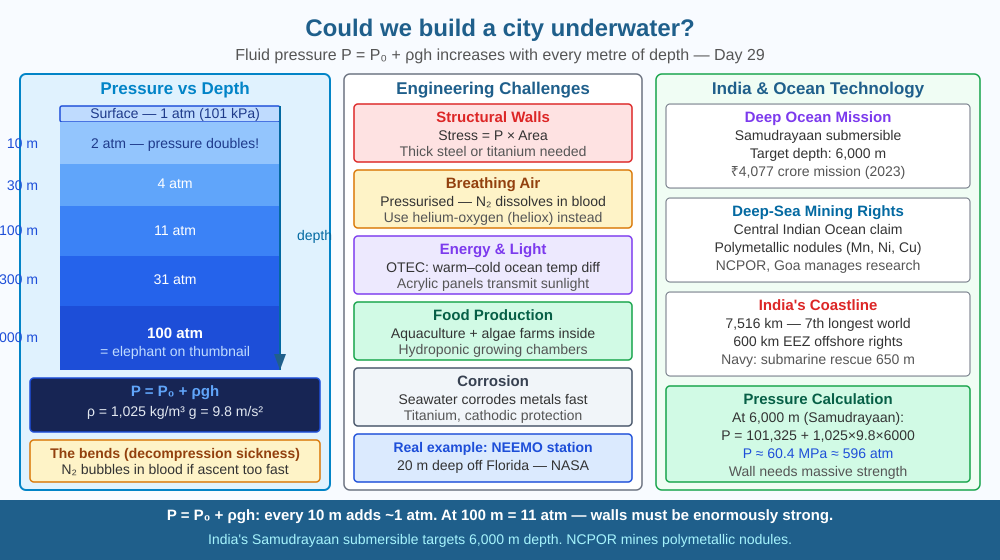

By the end of this lesson, you should be able to explain how water pressure increases with depth, identify the key engineering challenges of underwater living, and predict how wall thickness must change with depth.
The ocean floor covers 71 % of Earth's surface. Parts are rich in fish, minerals, and even fresh groundwater. Humans have lived in underwater research stations for weeks at a time. So what actually stops us from building cities underwater — is it technology, cost, or physics?
Water pressure with depth: P = P₀ + ρgh Where P₀ = atmospheric pressure (101,325 Pa), ρ = water density (1,025 kg/m³ for seawater), g = 9.8 m/s², h = depth.
At 10 m depth: P = 101,325 + 1,025 × 9.8 × 10 = 202,075 Pa ≈ 2 atm (pressure doubles!) At 100 m: P ≈ 11 atm At 1,000 m: P ≈ 100 atm (100× atmospheric pressure — equivalent to an elephant standing on your thumbnail)
Structural challenge: Walls must withstand compressive force from all sides. Stress = Pressure × Area. A 10 m diameter dome at 100 m depth experiences roughly 11 × 10⁵ Pa × (area of dome) — tens of millions of Newtons. This requires thick steel or titanium, adding enormous mass and cost.
Other engineering challenges: - Air supply: Pressurised air must be supplied. At high pressure, nitrogen dissolves in blood. Rapid decompression causes nitrogen bubbles (the bends — decompression sickness). Residents would breathe helium-oxygen or nitrox mixtures. - Food: Aquaculture inside the habitat, supply vessels, or algae farms - Energy: Ocean thermal energy conversion (OTEC) — using temperature difference between warm surface and cold deep water. Solar panels on buoys on the surface. - Transparent walls: Acrylic (PMMA) panels transmit light and withstand pressure — used in aquariums (Monterey Bay, India's Aqua World, Navi Mumbai) - Corrosion: Seawater is extremely corrosive. Special alloys, coatings, and cathodic protection required.
Real underwater habitats: NEEMO (NASA Extreme Environment Mission Operations) runs in a 20 m deep underwater station off Florida. Aquarius station has operated for decades. Japan's plans for Shimizu Ocean Spiral city (~4 km depth) exist as architectural concepts.
Think of water pressure like a stack of bricks. Each layer of water above you is a brick resting on the layer below. At the surface, you only carry the weight of the atmosphere — about 1 kg per cm² of your skin (1 atm). Go 10 m underwater and you now carry one atmosphere of water weight on top — total 2 kg per cm². Go to 100 m: 11 kg per cm², roughly 110 tonnes pressing on every square metre of a habitat wall.
A wall strong enough to handle that pressure must be thick and heavy. But there is a second problem: the deeper you go, the greater the pressure, so walls must scale with depth — doubling depth roughly doubles the pressure, requiring proportionally thicker, heavier, and more expensive structure. This is why submarines have pressure hulls made of high-yield steel 50–100 mm thick, and why the Titan submersible disaster (2023) showed that experimental carbon-fibre hulls can fail catastrophically under repeated pressure cycling.
The bricks analogy also explains something counterintuitive: water pressure acts equally in all directions (Pascal's law). A wall not only has to resist being pushed inward from outside — it must resist being twisted, sheared, and buckled by the same pressure acting on every surface simultaneously. That is why underwater habitats are always cylindrical or spherical: these shapes distribute compressive forces evenly with no weak corners.
The included SVG shows a vertical cross-section of the ocean from the surface to 1,000 m depth, with three habitat domes at 10 m, 100 m, and 1,000 m respectively. Each dome is labelled with its pressure value (2 atm, 11 atm, 100 atm) and a proportionally thicker wall drawn to scale — the deepest dome has walls nearly four times as thick as the shallowest. Pressure arrows point inward uniformly from all sides on each dome, becoming longer and more numerous with depth. A pressure-depth graph runs alongside, showing the linear relationship P = P₀ + ρgh. At the surface, a solar buoy provides power via a cable running down to all three domes. Small labels indicate engineering solutions: helium-oxygen air supply, OTEC power cable, acrylic window panels on the 10 m dome.

India has the world's 7th longest coastline (7,516 km). NCPOR (National Centre for Polar and Ocean Research, Goa) conducts deep-sea research. India has submitted a claim for deep-sea mining rights in the Central Indian Ocean for polymetallic nodules — potato-sized rocks containing manganese, nickel, copper, and cobalt. DRDO's underwater research includes midget submarines and underwater communication systems. India's Navy operates submarine rescue vehicles that can operate at depths up to 650 m. The 2024 Deep Ocean Mission includes a "Samudrayaan" submersible that will take scientists to 6,000 m depth — into the deep trench regions of the Indian Ocean.
Pressure demonstration: Fill a plastic bottle with water. Poke three holes at different heights (near top, middle, bottom). Cap and shake to pressurise, then uncap. Water shoots furthest from the bottom hole — pressure is greatest there. This is Pascal's law and the same principle that makes deep-sea structures require thicker walls than shallow ones.
Barotrauma is injury caused by pressure changes — ruptured eardrums from diving even 5 m without equalising pressure. At great depths, pressure does not just compress air pockets — it forces gas into solution in blood and tissue. If decompression is too fast, dissolved nitrogen forms bubbles (like opening a shaken soda can). Treatment requires a recompression chamber. This is why deep-sea divers undergo slow, carefully timed decompression stops on their way back up — taking up to 10 hours to return from a deep saturation dive. Saturation diving, used for undersea pipeline maintenance at 300 m depth, involves living in a pressurised habitat on the surface and commuting to the work site in a diving bell, staying in the pressurised environment for weeks.
Predict: If an underwater city were built at 50 m depth in the Indian Ocean and a microcrack developed in a 5 cm thick acrylic window panel, how would the pressure differential accelerate the crack compared to a similar crack in a window at sea level? What material property — tensile strength, yield strength, or fracture toughness — would be most relevant to the design of that panel, and why?
What is the greatest engineering challenge for building a city underwater?
Correct answer: C
Why is understanding fluid pressure mechanisms important for underwater city design?
Correct answer: B
If an underwater habitat were built at twice the depth, what would you predict about its walls?
Correct answer: A
A team of engineers plans to build a spherical underwater habitat with an internal diameter of 12 m at a depth of 200 m in the Bay of Bengal.
(a) Calculate the water pressure at 200 m depth using P = P₀ + ρgh (use ρ = 1,025 kg/m³, g = 9.8 m/s², P₀ = 101,325 Pa). Express your answer in both Pascals and atmospheres. (b) The total inward force on the habitat's external surface is approximately P × (projected area of one hemisphere = πr²). Calculate this force in Newtons. (c) The engineers choose steel with a yield strength of 250 MPa. Wall thickness t can be estimated using the hoop stress formula: t = Pr/(2σ), where r = 6 m and σ = yield strength. Calculate the minimum wall thickness needed. (d) At 2,000 m depth, the Samudrayaan submersible experiences ~200 atm. If the same steel and formula applies, calculate the required wall thickness. What practical challenge does this create for buoyancy?
At depths below 4,000 m, pressure is so extreme that wood — typically buoyant — sinks and compresses until it becomes denser than seawater. Shipwrecks that have fallen to these depths over centuries become waterlogged and compressed, preserving them from the bacterial decomposition that destroys wooden wrecks in shallower water. The wreck of the Titanic at 3,800 m is actually being consumed not by pressure but by iron-eating bacteria (Halomonas titanicae) discovered in 2010. At 11,000 m in the Mariana Trench, pressure is 1,100 atm — yet snailfish thrive there, their bodies having evolved to maintain protein function under extreme compression, using a molecule called TMAO that stabilises proteins that would otherwise be crushed out of shape.
Water pressure doubles for every 10 metres of depth, meaning an underwater city at 100 m faces 11 times atmospheric pressure on every wall — the physics of fluid pressure, not imagination, is what makes underwater cities so far beyond current engineering economics.